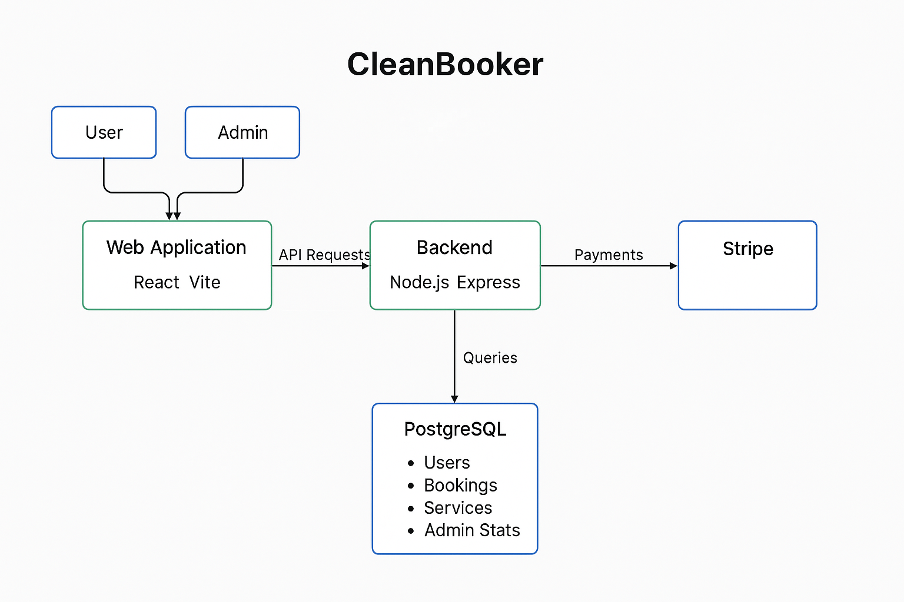

Software Design
API Documentation
Architecture Diagram

Users and admins interact with a React + Vite-based web frontend, which communicates with a Node.js + Express backend via API requests. The backend handles business logic, processes payments through Stripe, and interacts with a PostgreSQL database to manage core entities like users, bookings, services, and admin statistics. This architecture ensures a modular, scalable, and maintainable system optimized for both end-user experience and administrative operations.
Techonology Used
Backend
-
Node.js + Express + TS
-
express: lightweight web framework
- cors: enables cross-origin requests from the frontend
- dotenv: manages environment variables
- pg: PostgreSQL client
- nodemon: auto-restarts server during development
- typescript: TypeScript compiler
- ts-node-dev: auto-reload during development
- @types/*: type definitions
- zod: Zod schemas for request validation
-
hamlet: Helmet for security headers
-
Prisma ORM
-
Auto generates types for your database models
- Easy to read schema
- Powerful querying without raw SQL
- Built in migrations
- Works perfectly with TypeScript